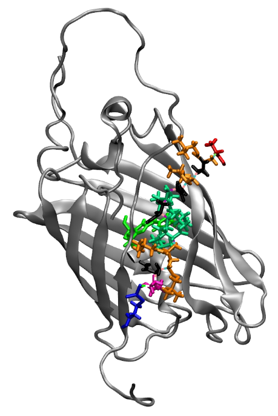
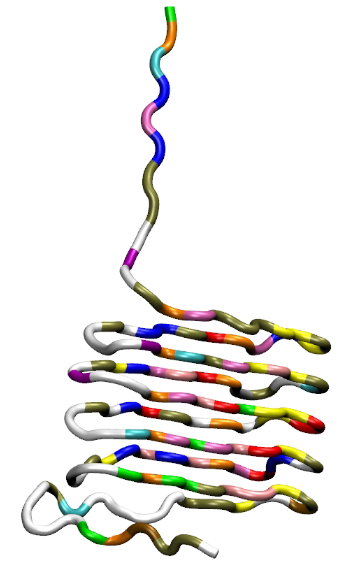
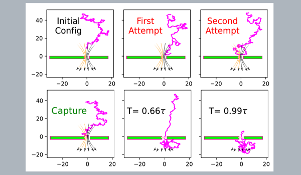
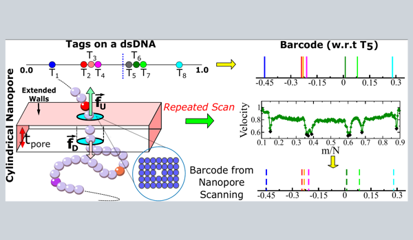
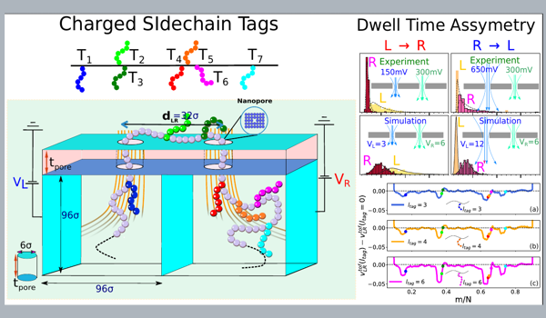
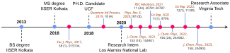

My Works
I am a Postdoctoral Associate in Chemical Engineering at Virginia Tech, with a Ph.D. in Physics from University of Central Florida. My work lies at the intersection of AI, molecular simulation, and biomolecular engineering, where I develop intelligent systems to accelerate discovery in drug design, protein engineering, and advanced biomaterials. I specialize in combining large-scale molecular dynamics simulations with machine learning and generative AI to solve complex, multi-scale problems in biology and chemistry.
My research focuses on building agentic AI frameworks for end-to-end scientific workflows, enabling autonomous setup, execution, and debugging of molecular simulations. I develop AI-driven data pipelines that transform scientific literature into machine-learning-ready datasets ( GlycoData), and design high-throughput drug discovery platforms capable of screening millions of compounds. My work also includes transferable coarse-grained modeling and enhanced sampling techniques for accelerated simulations of proteins, polymers, and hybrid biomaterials, alongside generative AI systems for novel oligomer and protein design—bridging physics-based modeling with next-generation AI-driven discovery.
An efficient way to start - Mesoscale modeling.
Coarse Graining
Complex bio-molecular structure of DNA, RNA or proteins are modeled using "bead-spring" in mesoscopic granularity level with a single bead consists of 10s of base-pairs.
Adding the external fields
External influences such as electric field and fluid flow are added into the force routine while solving the Brownian dynamics equation of motion.
Tuning the parameters
To match with the experimental results, simulation parameters are tuned to establish an agreement between the dimensionless quantities like Peclet number.
Current Blockades
Finally, current traces are obtained from the simulation trajectory by directly tracking the ion movements across the pore or using the VdW radii of the translocating species.
Current Research Highlights

Computational Oligomer Design for Enhancing Fluorescent Properties of Truncated GFP Protein
High-throughput computational design of functional oligomers aiming to enhances the fluorescence of truncated Green Fluorescent Protein (tGFP), a critical marker for various cell types. This project envisions to revolutionize bioimaging and cellular biology research by providing more stable and brighter fluorescent markers.
- Employing AutoDock Vina & rDock for initial docked oligomer structures.
- Utilizing high-throughput implicit water molecular dynamics (MD) simulations.
- Integrating Particle Swarm Optimization (PSO) to sample vast design space and Genetic Algorithm (GA) to evolutionarily guide the best binding structure.
- Validating the results with explicit water MD simulation and experimental results.
Collaboration with Dr. Adrian Figg's group @ Virginia Tech and GlycoMIP user projects.

Comparing and Enhancing the Mechanical Stability of Bacterial Fibrils
We study the structural and mechanical stability of bacterial fibril proteins to understand and enhance their properties. This research is crucial for developing durable bio-based materials.
- Conducting steered molecular dynamics simulations (SMD) on bacterial fibril proteins.
- Analyzing stress-strain curves to compare mechanical stability across species.
- Designing a coarse-grained model to study larger proteins and proposing glycosylation techniques to enhance stability.
Collaboration with Dr. Anna Duraj's group @ Virginia Tech and GlycoMIP user projects.
From my research
Bio-polymer Capture and Translocation through Single and Double Nanopores.

Capture to Translocation - The Journey of a Polymer
- Polymer capture time distribution depends on the initial release locations.
- Capture follows the Poisson process.
- Even in the nano-pore limit, a fully flexible chain has a finite probability of hairpin-loop capture.
- However, we show that the single file capture can be enhanced
- By artificially stiffening the polymer.
- By adding a charge tag at one of the end terminus.

Barcodes using a Cylindrical Nanopore
- Eight protein tags are attached to a 16.6 µm long λ-phage ds-DNA.
- Altering the bias force, we scan the DNA multiple times through the cylindrical nanopore.
- We observe that heavier protein tags make the DNA velocity non-uniform that leads to inaccurate barcodes.
- We introduce a novel interpolation scheme by incorporating both the tag and scan velocities that rectifies the barcodes.

Discriminating Protein Tags using a Double Nanopore device
- Using the BD simulation we identify that the charge interaction of the tags with the electric field leads to an asymmetric dwell time distribution.
- The average dwell time and the degree of asymmetries due to opposing and favoring local fields follow power laws as a function of the charge as well as the length of the protein tags.
- Lastly, we compare the P'eclet number and shows a close agreement with the experiment.
My Academic Timeline
